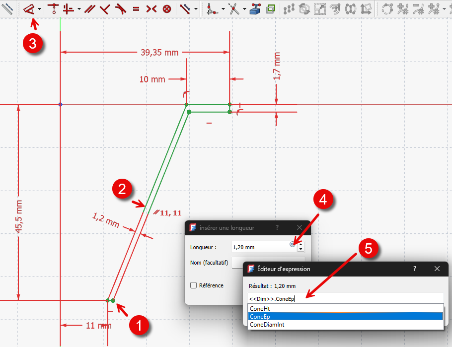

Spreadsheets & parameters: één tabel stuurt allesTableur & paramètres : un tableau pilote toutSpreadsheets & parameters: one table drives it all
Tot nu typte je elke maat los in. Op expertniveau ga je maten koppelen en aansturen vanuit één plek. Twee gereedschappen: expressies (een maat hangt af van een andere) en de spreadsheet (een tabel met genoemde parameters die je hele behuizing aanstuurt). Wijzig één getal, en alles volgt.Reliez les cotes depuis un seul endroit : expressions (une cote dépend d'une autre) et tableur (paramètres nommés). Un chiffre change, tout suit.Until now you typed each dimension by hand. At expert level you link them and drive them from one place: expressions (one dimension depends on another) and the spreadsheet (a table of named parameters). Change one number and everything follows.
- maten koppelen met een expressierelier des cotes par une expressionlink dimensions with an expression
- een spreadsheet met genoemde parameters makencréer un tableur de paramètres nommésbuild a spreadsheet of named parameters
- je behuizing vanuit één tabel aansturenpiloter le boîtier depuis un tableaudrive your enclosure from one table
Bij elke maat staat een kleine f(x)-knop (expressie-editor). Daarmee koppel je die maat aan een andere maat of aan een spreadsheet-cel.Chaque cote a un petit bouton f(x) (éditeur d'expression) pour la relier.Every dimension has a small f(x) button (expression editor) to link it to another dimension or a spreadsheet cell.
Expressie (maat ↔ maat): geef een maat een naam (dubbelklik de maat → naamveld, bv. L1). Klik bij een andere maat de f(x)-knop en typ Constraints.L1 * 0.7. Die maat is nu een afgeleide (resultaat) maat.Expression : nommez une cote (L1), puis sur une autre, f(x) → Constraints.L1 * 0.7.Expression (dim ↔ dim): name a dimension (double-click → name, e.g. L1). On another, click f(x) and type Constraints.L1 * 0.7.
Spreadsheet (centrale tabel): maak een spreadsheet, vul waarden in, en geef een cel een alias (rechtsklik de cel → Alias, bv. lengte). Verwijs er dan naar met Spreadsheet.lengte via de f(x)-knop.Tableur : valeurs + alias (clic droit → Alias) ; référez avec Spreadsheet.lengte.Spreadsheet: enter values, give a cell an alias (right-click → Alias, e.g. length); reference it as Spreadsheet.length.
01Maten koppelen met expressiesRelier des cotesLinking dimensions with expressions
Een maat hoeft geen vast getal te zijn — ze kan afhangen van een andere maat. Voorbeeld: de korte zijde van een rechthoek moet altijd 70% van de lange zijde zijn. Je geeft de lange zijde een naam (L1), en bij de korte zijde open je met de f(x)-knop de expressie-editor en typ je Constraints.L1 * 0.7. Verander je L1, dan past de korte zijde zich vanzelf aan. (Binnen één schets verwijs je naar maten via Constraints.; vanuit een andere stap via de schetsnaam, bv. Sketch.Constraints.L1.)Une cote peut dépendre d'une autre : nommez L1, puis f(x) → Constraints.L1 * 0.7. Depuis ailleurs : Sketch.Constraints.L1.A dimension can depend on another. Name the long side L1, then on the short side open the f(x) editor and type Constraints.L1 * 0.7. Within a sketch reference via Constraints.; from elsewhere via the sketch name, e.g. Sketch.Constraints.L1.

02De spreadsheet: één tabel met parametersLe tableur : un tableau de paramètresThe spreadsheet: one table of parameters
Expressies tussen losse maten worden snel onoverzichtelijk. Beter: zet al je kernparameters in een spreadsheet. Een cel kan een getal, tekst of een expressie (begint met =) bevatten. Geef elke belangrijke cel een alias — een leesbare naam zoals lengte of wanddikte. In je maten verwijs je er dan naar met Spreadsheet.lengte. Eén centrale tabel die je hele model voedt.Mettez vos paramètres clés dans un tableur ; chaque cellule reçoit un alias (lengte) référencé par Spreadsheet.lengte.Put your key parameters in a spreadsheet. A cell holds a number, text or an expression (starts with =). Give each key cell an alias like length, then reference it as Spreadsheet.length.
03Je behuizing volledig parametrischLe boîtier entièrement paramétriqueYour enclosure fully parametric
Nu komt alles samen. Zet in je spreadsheet de echte ontwerpgetallen: PCB-lengte, PCB-breedte, hoogte, wanddikte en speling (H12). Laat alle maten van je bak en deksel ernaar verwijzen — de buitenmaat wordt bijvoorbeeld Spreadsheet.pcb_lengte + 2*Spreadsheet.wanddikte + 2*Spreadsheet.speling. Krijg je een andere printplaat? Eén getal aanpassen, en de hele behuizing — bak, deksel, gaten — past zich aan. Dat is parametrisch modelleren ten top.PCB-longueur/largeur, hauteur, paroi, jeu (H12) dans le tableur ; toutes les cotes y réfèrent. Nouveau PCB = un chiffre.Put the real numbers in the spreadsheet: PCB length/width, height, wall thickness, clearance (H12). Make every box/lid dimension reference them — e.g. outer size = Spreadsheet.pcb_length + 2*Spreadsheet.wall + 2*Spreadsheet.clearance. A different PCB? Change one number and the whole enclosure adapts.
Zet je parameters op één plek (een spreadsheet) en laat je maten ernaar verwijzen met expressies. Dan wijzig je één getal en volgt het hele model — zonder elke maat apart na te lopen.Paramètres au même endroit, cotes qui y réfèrent : un chiffre, tout suit.Keep parameters in one place and have dimensions reference them. Change one number and the whole model follows.
Binnen een schets verwijs je naar een maat met Constraints.naam; naar een spreadsheet met Spreadsheet.alias. Gebruik in de expressie-editor de auto-aanvulling (typ de eerste letters, kies uit de lijst) — zo vermijd je typfouten. En geef cellen duidelijke aliassen (wanddikte, niet B2).Esquisse : Constraints.nom ; tableur : Spreadsheet.alias. Utilisez l'auto-complétion ; alias clairs.In a sketch use Constraints.name; for the table Spreadsheet.alias. Use the editor's autocomplete; give cells clear aliases (wall, not B2).
Maak één spreadsheet "Behuizing" met pcb_lengte, pcb_breedte, hoogte, wanddikte en speling. Die ene tabel stuurt bak én deksel aan. Bouw je later een tweede toestel met een grotere printplaat, dan hergebruik je hetzelfde model en pas je enkel de tabel aan.Un tableur « Boîtier » (pcb_long, pcb_larg, hauteur, paroi, jeu) pilote boîte + couvercle. Réutilisable.One "Enclosure" spreadsheet (pcb_length, pcb_width, height, wall, clearance) drives box and lid. Reuse it for the next build.
Maak een spreadsheet met de aliassen lengte, breedte, hoogte, wanddikte en speling. Koppel de basisschets en de hoogte van je bak eraan met expressies (Spreadsheet.lengte enz.). Wijzig daarna de lengte in de tabel met 20 mm en controleer dat bak (en deksel) automatisch meegroeien.Tableur (lengte, breedte, hoogte, wanddikte, speling) → reliez la boîte ; changez la longueur et vérifiez.Make a spreadsheet with aliases length, width, height, wall, clearance. Link your box's base sketch and height to them; then change the length by 20 mm and check the box (and lid) grow with it.
04Veelgemaakte foutenErreurs fréquentesCommon mistakes
- Prefix vergeten. Een maat heet niet zomaar L1 in een expressie; gebruik Constraints.L1 (of Spreadsheet.alias).Préfixe oublié : Constraints.L1.Forgotten prefix. Use Constraints.L1 (or Spreadsheet.alias), not bare L1.
- Cel zonder alias. Zonder alias kun je er niet leesbaar naar verwijzen. Geef elke parameter-cel een alias.Cellule sans alias. Donnez un alias.Cell without an alias. Give each parameter cell an alias.
- Kringverwijzing. A verwijst naar B en B naar A → fout. Hou de richting één kant op.Référence circulaire. Évitez A↔B.Circular reference. A → B and B → A breaks. Keep one direction.
05Samenvatting
Met expressies laat je een maat afhangen van een andere (via de f(x)-knop en Constraints.naam). Met een spreadsheet zet je al je kernparameters in één tabel, geef je cellen een alias en verwijs je ernaar met Spreadsheet.alias. Zo stuur je je hele behuizing vanuit één plek: één getal wijzigen en alles past zich aan. De ideale basis voor varianten (H21).Expressions (f(x), Constraints.nom) + tableur (alias, Spreadsheet.alias) = un modèle piloté d'un seul endroit. Base des variantes (H21).Expressions (f(x), Constraints.name) and a spreadsheet (aliases, Spreadsheet.alias) drive the whole enclosure from one place. The basis for variants (H21).
- f(x)-knop = expressie; verwijs met Constraints.naam of Spreadsheet.alias.f(x) = expression ; Constraints.nom / Spreadsheet.alias.f(x) = expression; reference Constraints.name or Spreadsheet.alias.
- Geef cellen een alias; één tabel stuurt het model.Alias ; un tableau pilote.Give cells an alias; one table drives the model.
- Eén getal wijzigen → alles volgt.Un chiffre → tout suit.Change one number → everything follows.